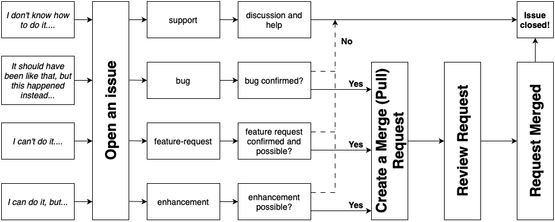

Contributors Guide#
Contributions to Minterpy are welcome!
Before you begin, please take a moment to review the following guidelines.
There are many ways you can contribute to Minterpy:
Requesting support
Suggesting missing documentation
Adding documentation, including examples and how-to guides
Reporting bugs in the code or errors in the documentation
Fixing bugs
Adding missing tests
Requesting new features
Implementing new features
Improving current features
Reviewing a merge request
If you’d like to contribute but aren’t sure where to start, take a look at the open issues. Choose one, comment that you want to work on it, and get started!
Otherwise, opening an issue is typically the best way to begin; please refer to the specific guidelines below.
A visual summary of the contributions pipeline in the Minterpy project is presented below.
We expect all contributors to adhere to our Code of Conduct.
Asking for support#
We believe that asking for support is a valuable form of contribution. The development team is genuinely interested in understanding the paint points you experience when using Minterpy.
If you ever feel lost or confused, don’t hesitate to seek help by opening
an issue and tagging it as support.
Note
This goes the other way around as well. If you see an open issue asking for help that you know how, feel free to reply on it!
Reporting a bug#
If you encounter a bug or unexpected behavior (including errors in the documentation),
please report it by opening an issue and tagging it as bug.
To help us reproduce the issue, please provide a code snippet that demonstrates the problem and mention the version of Minterpy you’re using. Additionally, it would be helpful if you could answer the following questions:
What were you trying to do?
What did you expect to happen?
What actually happened instead?
Optionally, you can also suggest how to fix the bug. If you already have a solution, feel free to open a merge (pull) request.
Requesting a feature#
If you’re working with Minterpy and notice a missing feature, first check the list of issues to see if the feature has already been requested or if there’s an on-going discussion about it.
If no prior issue exists, please open a new issue, tag it as a feature-request,
and include the following details:
Describe the missing feature
Explain its intended functionality
Provide uses cases where this feature would be useful
Suggest how you would implement the feature; If you have a working code, please consider creating a merge (pull) request.
Requesting an improvement#
If the feature you need is already available in Minterpy but is inconvenient
to use–whether it’s slow or has an awkward interface–please open an issue
and tag it as enhancement; this also applies to any sub-par explanations
in the documentation.
When doing so, please provide the following details:
What were you trying to do?
Why is it inconvenient to do with the current Minterpy feature? Is it slow? Does it have an awkward interface?
(Optional) How would you improve the current feature? Again, if you have a working code, please consider creating a merge (pull) request.
Resolving the issue yourself and creating a merge (pull) request#
If you decide to tackle the issue yourself, whether it’s a bug fix, an improvement, or a new feature, that’s great!
Make sure to check out the following guides:
Reviewing a merge (pull) request#
Reviewing a merge request is an essential contribution to the Minterpy project, ensuring that the changes are accurate and meet the required standards.
When reviewing a merge request, be sure to:
Ask questions to clarify anything you don’t understand.
Check for appropriate tests, especially regarding potential regressions; while most are automated, an extra review is valuable.
Ensure the documentation is sufficient (including in-code documentation)
Verify good code formatting and readability.
If you believe there’s a better approach or solution, feel free to discuss it with the author of the request.
Well, that’s all! Thank you for contributing to Minterpy!